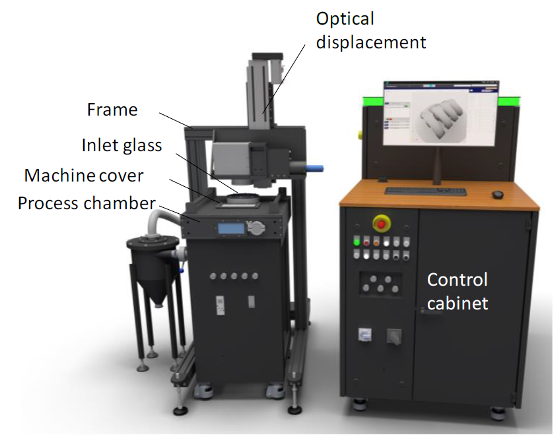
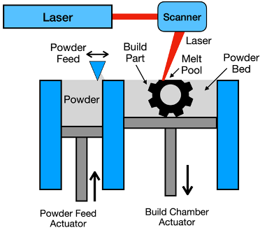
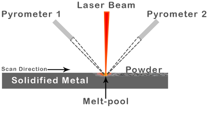
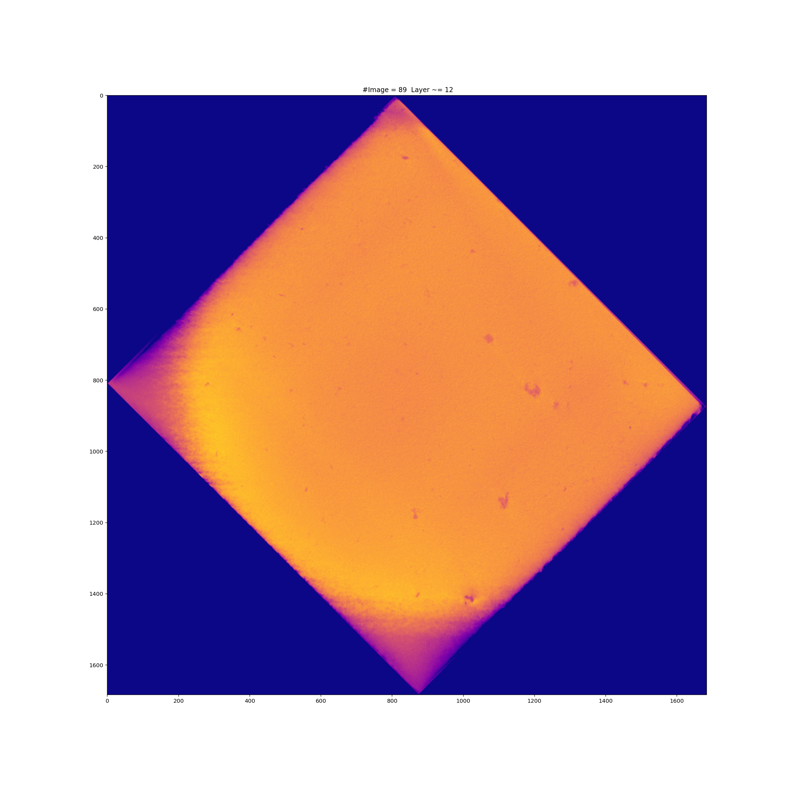
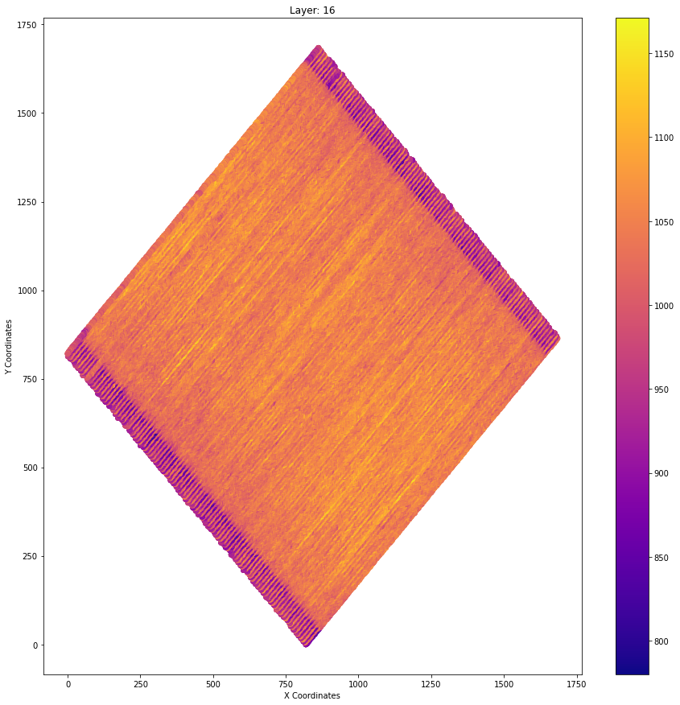

Potential MSc/4th Year/CASE 3 Projects
I am interest in projects in the areas of Information Retrieval, Machine Learning and Natural Language Processing, possibly mixing all of these!
You may have a look at my research interests, papers, research projects and TAPIR.
I welcome student ideas and suggestions of projects in these areas.
In addition, for students that are looking for an inspiration, a list of potential projects is listed as follows.
Additive Manufacturing
Industrial revolution 4.0 bring forth a growing trend of employing intelligent manufacturing systems like 3D printing or Additive Manufacturing (AM).
The 3D printer reads a Computer-Aided Design (CAD) file, lays the metal powder for fusion, and the designed product is constructed layer-by-layer. Therefore, we have much control over the design and quality of the final product. Furthermore, based on the application and industry, AM equipment has the flexibility of using a vast collection of materials like glass, metals (steel, titanium, and gold), thermoplastics (polycarbonate, and polylactic acid), and bio-ink (created using stem cells). As a result, AM possesses the potential to reduce energy and material wastage, provide greater design flexibility and extends product life.
We employ AconityMINI 3D printer (see Figure 1). It is a Powder-Bed Fusion - Laser Beam (PBF-LB) system (see Figure 2). An example of PBF-LB process can be viewed at this YouTube link.



AM using Powder-Bed Fusion (PBF) technique has high potential but are susceptible to process parameters. However, the large amount of data generated by an AM process well captures information of the underlying process (see Figure 3).


This availability of big data paves the way to employ Machine Learning (ML) and data analysis tools to understand the fault and mitigate any future occurrence. The manufacturing industry’s adoption rate of ML and analytics to improve predictive maintenance is forecast to increase 38% in the next five years.
The following sections briefly discuss available projects in the domain of AM. All these projects would aid a more extensive research ongoing in the field of ML in AM.
[1] A Computed Tomography (CT) scan combines a series of X-ray images of an object. It helps us to see inside solid objects like metal cubes to find cracks and pores.
[2] A pyrometer is a sensor that determines surface temperature by measuring radiant heat.
Project 1
Employing Machine Learning to detect pores on Image Stacks (produced through -CT) of an AM block.
Dataset: ImageStacks of 2 builds of 10x10x10 cubes are available, manufactured on AconityMINI 3D printer. The density ranges from 82.3% to 84.68% (Pulsed Laser), and 93.3% to 97.1% (Continuos Laser).
Objectives:
- Using object detection methods, highlight and extract the location of pores present/illustrated on the image.
- Comparing pore area to dense area, calculate the average porosity of a layer, and the block.
Things you would learn:
- Data analysis challenges and opportunities in AM domain, and gain some expertise in dealing with datasets arising from such process.
- State of the art and emerging Computer Vision tools like OpenCV, PoreSpy, etc. for object detection – to investigate occurrence of pores in the image dataset.
- Predicting product quality by analysing the porosity of the overall product.
- Gain the experience of working in a research environment to enhance your analytical, management, and decision making skills.
Project 2
Analysing 81 Stainless-Steel cubes’ pyrometer data and gauge their sensitivity to the build parameters.
Dataset: Pyrometer data of 81 Stainless-Steel cubes, where each cube is manufactured with a different set of parameters. The build parameters are: Laser Power (), Scanning speed (), Spot size (), and Hatch spacing ().
Objectives:
- Thermal gradient (rate of change in temperature) of a block versus the rest.
- Analysing correlation of parameters on the thermal profile of blocks.
- Parameter recommendation to mitigate anomalous events.
Things you would learn:
- Data analysis challenges and opportunities in AM domain, and gain some expertise in dealing with datasets arising from such process.
- Gain experience in Time-series data analysis (widely researched ML field) and work with tools like sklearn, scipy, and tslearn.
- Predicting and rectifying the parameter at fault when a particular anomalous thermal signature is observed.
- Experience in working in a research environment to enhance your analytical, management, and decision-making skills.
Project 3
Create a tool to visualise pyrometer data on a 3D plane.
Dataset: ImageStack of a Stainless-Steel cube of dimension 10x10x10 .
Objectives:
- Create an interactive tool for visualising an entire block’s thermal signature.
- It has the feature to focus on a single/batch of layer/s if needed.
- Summary statistics like average temperature, variance, etc. is provided (dynamically) for the plot in view.
Things you would learn:
- Data analysis challenges and opportunities in AM domain, and gain some expertise in dealing with datasets arising from such process.
- Gain expertise in building a robust big data visualisation tool in Python, C/C++, or any language of choice (provided if the tool is capable of fast rendering).
- Anomaly detection techniques to showcase anomalous zones in the block based on their summary statistics of the temperature data.
- Packaging and deploying the software to be utilised by the research community.
Project 4
Evaluation of Machine Learning algorithms over descomposed time-series dataset.
Dataset: Pyrometer data of two Stainless-Steel cubes of dimension 10x10x10 .
Objectives:
- Analysing the predictive capability of time series’ informative features like mean, variance, trend, noise, etc.
- Application of ML algorithms over the decomposed dataset for a classification/regression task that predicts the quality of the product.
Things you would learn:
- Data analysis challenges and opportunities in AM domain, and gain some expertise in dealing with datasets arising from such process.
- The ML pipeline from feature engineering to knowledge discovery.
- ML tools like sklearn, tslearn, and tsfresh.
- Gain the experience of working in a research environment to enhance your analytical, management, and decision making skills.
Personalisation
Project 1: Personalized retweet recommendation/prediction
The aim of this project is to use previous users’ tweets in order to predict (or recommend) interesting tweets for them to retweet. This will take as input the user profile and suggests a list of tweets based on two things: 1) the tweets from the accounts that the user follow, this will act as the pool of the tweets that the user will pick one from to retweet, and 2) the historical tweets existing in the user profile, which reflects user interests and will be used in the personalization process. One approach to solve this problem is to extract entities from user previous tweets and add them to a user model. This model will assign weights to the entities and new tweets mentioning the same or highly related entities will be recommended to the user.
### Project 2: Personalized category recommendation
In this task the AI system will recommend one or more categories for the user based on her/his preferences. Preferences will be collected from their previous picks and any other information exists in their profile. Several datasets and domains can be used for this task: Movielens 1 million dataset, Amazon Product search dataset, Yelp Open Directory dataset and many others. This approach will focus on users with a long history in the system. Several approaches can be followed to solve this problem: probabilistic approaches, matrix factorization methods, machine learning methods.
Project 3: Category/ Item recommendation for new users
New users in the system usually have short or no historical interactions to be used in personalization, which is known as cold start problem. It is important that the system recommends interesting categories/ or items for them, otherwise they may have negative impressions regarding the system and may leave it. This task collects preferences from existing users in the system and uses them collectively to recommend interesting categories/items. Several datasets and domains can be used in this task: Movielens 1 million dataset, Amazon Product search dataset, Yelp Open Directory dataset and many others. This project focuses on users with very short profiles. It would be interesting to study if the short profile contributes to the personalization process or only CF models do.
Semantic Predictors of Knowledge Gain in Informational Search Sessions
People interact day-to-day with search engines in order to do or know something, or to go somewhere. These different types of intents, which are also referred to as transactional, informational, and navigational, usually result in a different behaviours during the search session. In particular, during an informational session, the user goes through several phases of query reformulations as they engage with the content retrieved by the search engine and learn more about it. This project aims at identify semantic features associated with the user’s query reformulation.
Links/Further readings:
- Yu, Ran, Ujwal Gadiraju, Peter Holtz, Markus Rokicki, Philipp Kemkes, and Stefan Dietze. “Predicting user knowledge gain in informational search sessions.” In The 41st International ACM SIGIR Conference on Research & Development in Information Retrieval, pp. 75-84. ACM, 2018.
- Gadiraju, Ujwal, Ran Yu, Stefan Dietze, and Peter Holtz. “Analyzing knowledge gain of users in informational search sessions on the web.” In Proceedings of the 2018 Conference on Human Information Interaction & Retrieval, pp. 2-11. ACM, 2018.
Point-Of-Interest (POI) Recommendation
Recommending POI is a very challenging but also timely and relevant problem. It needs to take into account several factors, such as the person’s preferences and tastes, the popularity of activities in a given area, rates and reviews from other users, but also contextual factors, like user location and time, or the past check-in point during the same day. This project looks at the problem of POI recommendation by incorporating all the information about the user and the POI in a very challenging setting provided by the Yelp dataset.
Links/Further readings:
Dynamic User Embeddings
A user profile represents the digital version of the user’s experiences, interests, and behaviour. While the richer this representation, the more accurate and useful is the profile for tasks such as personalisation and recommendation, this kind of representation often misses out the dynamics behind the user’s behaviours and how their interests have changed over time.
This project seeks to find appropriate representations of the user interests capable of embedding the temporal dimension behind the user interaction with the system in the construction of the user profile.
Links/Further readings:
Diachronic Analysis of Language via Word Embeddings
Synchrony and diachrony are two different and complementary viewpoints in linguistic analysis. While a synchronic approach considers a language at a moment in time without taking its history into account, the diachronic approach considers the development and evolution of a language through history. The project aims at defining new word embeddings techniques to perform the diachronic analysis of language. Links/Further readings:
- Unsupervised Lexical Semantic Change Detection
- Kutuzov, Andrey, Lilja Øvrelid, Terrence Szymanski, and Erik Velldal. “Diachronic word embeddings and semantic shifts: a survey.” arXiv preprint arXiv:1806.03537 (2018).
Query Logs Applications
Query logs represent a huge wealth of information about the users and their information behaviour, i.e. the way humans interact with, seek, and utilise information. They are used for a variety of algorithms behind search engines, ranging from query auto-completion and suggestion to result recommendation and diversification.
There are several subtopics that may be worth to be investigated in this area, some of them are listed as follows (but feel free to suggest your own topic):
-
Identifying task/intent during a search session
Links/Further readings:
-
Query auto-completion
Links/Further readings:
- Mitra, Bhaskar. “Exploring session context using distributed representations of queries and reformulations.” In Proceedings of the 38th international ACM SIGIR conference on research and development in information retrieval, pp. 3-12. ACM, 2015.
- Cai, Fei, Shangsong Liang, and Maarten de Rijke. “Prefix-adaptive and time-sensitive personalized query auto completion.” IEEE Transactions on Knowledge and Data Engineering 28, no. 9 (2016): 2452-2466.